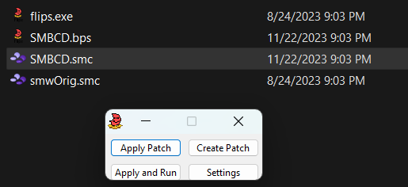
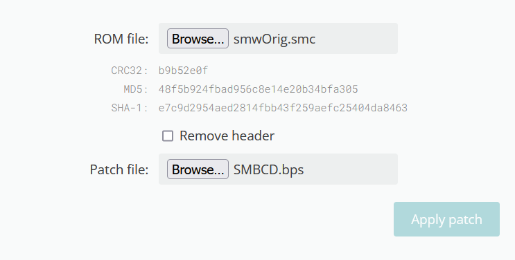

![[Back]](graphics/banners/backes.png)
Más Info Notable
Este guía cubre cómo instalar rom hacks de SMW, y cómo usar correctamente el MSU-1. Aunque el guía hablara de SMBCD, las mismas instrucciones también se pueden aplicar para la mayoría de rom hacks para la Super NES.
El MSU-1 es el principal componente que permite que SMBCD ofrezca su audio de alta calidad al nivel de un CD, junto con otras características con las que el Super NES batallaría por su cuenta. Siendo este el caso, el MSU-1 es requerido para siquiera iniciar SMBCD. Si no dispone del MSU-1 o no lo ha instalado correctamente, SMBCD no funcionará. Si sigues el guía correctamente e instalas todos los archivos requeridos para el MSU-1, pero SMBCD aún no logra iniciar, checa si su emulador es compatible con el MSU-1 o únete al servidor de Discord de FamicomCD, donde podrá recibir más ayuda a fondo.
Importante: Necesitará su propio rom Americano de Super Mario World en formato SMC o SFC para parchar con el archivo BPS de SMBCD. Recomendamos que obtenga su propio rom official de su propio cartucho Americano de SMW para Super NES. Nosotros no le instruiremos a nadie cómo, ni en dónde, obtener los archivos del juego si es que no los quiere obtener de su cartucho oficial.
Configurando SMBCD y el MSU-1
(Los primeros pasos son generalmente los mismos que para cualquier hack de SMW. Si ya sabe lo básico sobre configurar hacks de SMW, siéntase libre de saltar hasta el paso 5).
Paso 1: Primero que nada, descarga una versión de SMBCD de la página de Descargas de versiones. Se descargará como un archivo ZIP.
Paso 2: Abre el ZIP para revelar sus contenidos. Si no dispones de algún programa para abrir archivos ZIP, recomendamos el programa 7-ZIP.
Paso 3: Al abrir el ZIP de SMBCD, encontrarás el archivo BPS de SMBCD, un archivo MSU, y los archivos PCM. Por ahora solo preocúpate del archivo BPS. Ahora es cuando su rom americano de SMW en formato SMC o SFC entra en acción.
Paso 4: Aplica el archivo BPS de SMBCD en el rom Americano de SMW en formato SMC o SFC utilizando programas como Floating IPS o Marc Robledo's Onliner Patcher.
IPS Method

Método Marc's Online Patcher

Paso 5: Ahora que tiene su archivo SMC de SMBCD, pruebe para ver que todo funcione correctamente. Si la pantalla diciendo que requieres del MSU-1 aparece, ha parcheado el juego correctamente, pero aún no ha terminado. Ahora necesitará los archivos del MSU-1 para completar la instalación.
Paso 6: ¿Se acuerda de esos archivos MSU y de PCM de hace poco? Los necesitará tener todos en el mismo directorio y con el mismo nombre* que el archivo SMC de SMBCD. Para que todo esté organizado, recomendamos que tenga todos los archivos relacionados con SMBCD en su propio folder.
*Los archivos PCM son ligeramente la excepción a esta regla debido a que necesitan tener su número de pista después del nombre en común. Esto se indica con el signo (-) y el número.
Paso 7: Una vez que todos tus archivos están en orden, SMBCD debería empezar correctamente. Si sigue recibiendo el error de que requiere del MSU-1, por favor asegúrese de que su emulador sea compatible usando el documento Info sobre Emuladores y SMBCD, o únase al servidor de Discord de FamicomCD para más ayuda a fondo.